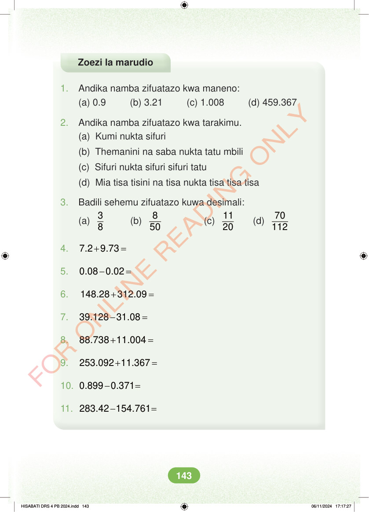

Zoezi la marudio 1. Andika namba zifuatazo kwa maneno: (a) 0.9 (b) 3.21 (c) 1.008 (d) 459.367 2. Andika namba zifuatazo kwa tarakimu. (a) Kumi nukta sifuri (b) Themanini na saba nukta tatu mbili (c) Sifuri nukta sifuri sifuri tatu (d) Mia tisa tisini na tisa nukta tisa tisa tisa 3. Badili sehemu zifuatazo kuwa desimali: (a) 3 8 (b) 8 50 (c) 11 20 (d) 70 112 4. + = 7.2 9.73 5. - = 0.08 0.02 6. + = 148.28 312.09 7. - = 39.128 31.08 8. + = 88.738 11.004 9. + = 253.092 11.367 10. - = 0.899 0.371 11. - = 283.42 154.761 HISABATI DRS 4 PB 2024.indd 143 HISABATI DRS 4 PB 2024.indd 143 06/11/2024 17:17:27 06/11/2024 17:17:27